目录：
break 语句，break 语句用于跳出当前循环体
continue语句，跳过当前循环块中的剩余语句，然后继续进行下一轮循环
pass 语句是空语句，是为了保持程序结构的完整性，pass 不做任何事情，一般用做占位语句
Python for循环可以遍历任何序列的项目，如一个列表或者一个字符串。
for循环的一般格式如下：
for 变量接收名 in 对象 :
代码示例：
1 list1 = ["one","two","three",4]
2 for i in list1:
3 print(i)输出结果：
one
two
three
4
For循环时加上序号enumerate：
1 list1 = ["手机","电脑","ipad"]
2 for i,v in enumerate(list1,1): #表示遍历list1这个列表，序号从1开始。
3 print(i,v)输出结果：
1 手机
2 电脑
3 ipad
循环语句可以有 else 子句，它在穷尽列表(以for循环)或条件变为 false (以while循环)导致循环终止时被执行,但循环被break终止时不执行，简而言之就是break后不会执行下级的else（注意break的级别）
range()函数
如果你需要遍历数字序列，可以使用内置range()函数，它会生成数列。
range(起始值,终止值，步长)这里是左闭右开区间，可以取到起始值，但是取不到终止值，只能取到终止值的前一个，步长就是遍历时的距离，默认是。
代码示例：
1 for i in range(5,1,-1):
2 print(i)输出结果：
5
4
3
2
range的组和用法：
可以结合range()和len()函数以遍历一个序列的索引：
1 list1 = ["手机","电脑","ipad"]
2 for i in range(len(list1)): #len是从1开始，range没写参数是从0开始
3 print(i,list1[i])输出结果：
0 手机
1 电脑
2 ipad
表现形式：name = b”baby”
内部原理
Utf-8编码下：
01100010 b
01100001 a
01111001 y
如果是字符串类型的baby，那默认是Unicode，一字符占4个字节
如果有中文：
表现形式：b'\xe5\xa4\xa9\xe4\xb8\x8b'（“天下“的表现形式）
\x表示16进制
Utf-8编码下：
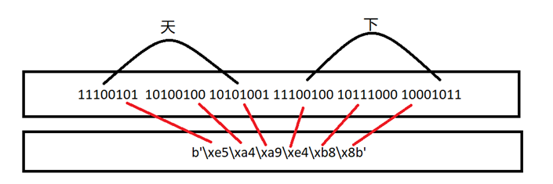
例如：\xe5表示00100101，其中e前四位，5后四位
因为是前四位，一共16中变换形式，所以用16进制刚好可以表现（\x）
所以\xe5 正确的表现形式是 1110 0101（就是十六进制和二进制的转换）
内存：
00000000 00000000 00000000 01010100 unicode A
01010100 utf-8 A
01010100 01010100 gbk A
01010000 00000100 gb2312 A
... …
硬盘：
01010100 utf-8 A
01010100 utf-8 A
01010100 gbk A
01010100 gb2312 A
... ...
本质上，内存中都是010101，具体是什么样子的010101，需要根据编码来决定。不同编码的010101，互相不认识。
在python3里:
默认解释器的编码：utf-8 -> 010101010101
特殊的：
字符串（str）：
表现： a = "alex"
本质： 01010101，unicode
字节（bytes）：
表现： a = b"alex"
本质： 01010101，某种编码： utf-8,gbk,.....
总结：
python3：
str --> uniocde
bytes --> gbk,utf-8.....
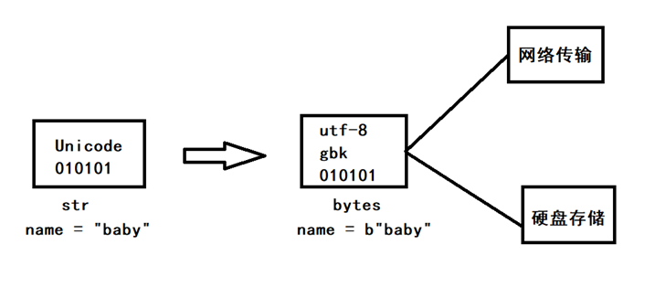
字符串类型的表现形式是 name = “baby” 默认是用Unicode编码的，当字符串需要网络传输或者硬盘储存时，需要将Unicode编码的str准换为其他编码的bytes，以节省空间。
5.1变量指向：
1 1 name = "zrh"
2 2 name1 = name
3 3 print(name,name1)
4 4 name = "zrh1"
5 5 print(name,name1)
6 #输出结果
7 #zrh zrh
8 #zrh1 zrh内部原理：
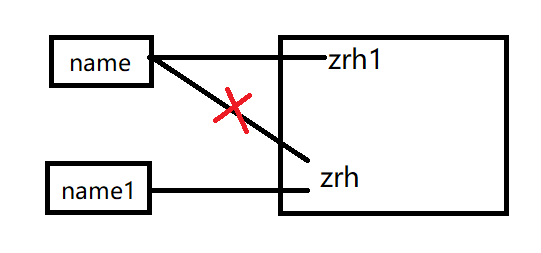
name1通过name指向zrh，此时name1的值就是zrh后面即使name改变为zrh1，name1的值也不会改变。
5.2列表指向：
1 list1 = [1,2,3]
2 list2 = list1
3 list1.append(4)
4 print(list1,list2)
5 #输出结果：[1, 2, 3, 4] [1, 2, 3, 4]内部原理：
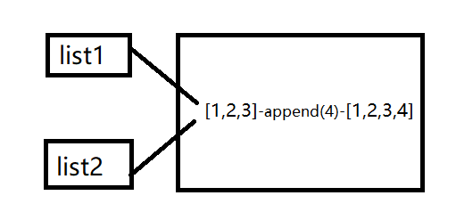
list2通过list1指向【1，2，3】，此时list2的值就是【1，2，3】，append直接改变的是值，所以list1和list2都改变了。
5.3深浅拷贝
浅拷贝：只拷贝第一层，其他都指向同一数据
深拷贝：不管里面有多少嵌套，都会拷贝下来
深浅拷贝只有存在嵌套时才会有异同
内存原理：
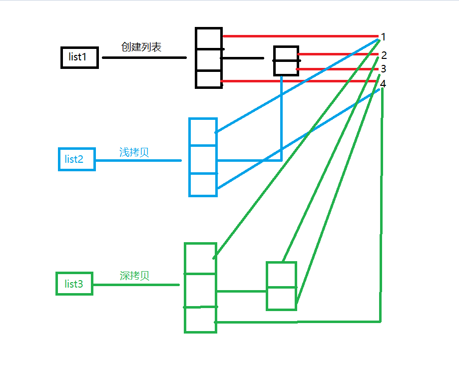
公式格式：
1 list1 = [1,[2,3],4]
2 #浅拷贝
3 list2 = list1.copy()
4 #深拷贝
5 import copy
6 list3 = copy.deepcopy(list1)注意：
list3最后一层是python为了节省内存才直接指向list1的数据，所以list1改变数据，是从新开辟出一块新的内存让list1指向，list3不变。
1 list1 = [1,[2,3],4]
2 #深拷贝
3 import copy
4 list3 = copy.deepcopy(list1)
5 list1[0] = 0
6 print(list3[0])
7 #输出结果： 1集合（set）是一个无序的不重复元素序列。
可以使用大括号 { } 或者 set() 函数创建集合，注意：创建一个空集合必须用 set() 而不是 { }，因为 { } 是用来创建一个空字典。
1 list1 = [] #等价于list1 = list()
2 tuple1 = () #等价于tuple1 = tuple()
3 dict1 = {} #等价于dict1 = dict()
4 #s所以创建集合是 set()集合里的元素必须是不可变的
set1 = {“1”，“zrh”,[1,2,3]}这样就会报错，因为列表是可变的
不可变类型：整型、字符串、元组
可变类型：字典、列表
集合也可以for循环，集合不可以通过索引来取值，因为集合无序。
创建格式：
1 parame1 = {"one","two","three"} #创建方法1
2 a = set("apple") #创建方法2
3 print(parame1,a)
4 #打印结果{'two', 'three', 'one'}集合无序的；
5 #{'l', 'p', 'a', 'e'}因为是不能重复的，所以只有一个aSet内置方法：
|
方法 |
描述 |
|
add() |
为集合添加元素（无返回值） |
|
clear() |
移除集合中的所有元素（无返回值） |
|
copy() |
拷贝一个集合（无返回值） |
|
difference() |
返回多个集合的差集（返回一个新的集合） |
|
difference_update() |
方法用于移除两个集合中都存在的元素（无返回值） |
|
discard() |
删除集合中指定的元素（无返回值）删除元素不存在不会报错 |
|
intersection() |
返回集合的交集（返回一个新的集合） |
|
intersection_update() |
更新指定集合为指定集合和参数集合的交集（无返回值） |
|
isdisjoint() |
判断两个集合是否无交集，如果没有返回 True，否则返回 False（返回布尔值 ） |
|
issubset() |
判断指定集合是否为该方法参数集合的子集（返回布尔值 ） |
|
issuperset() |
判断该方法的参数集合是否为指定集合的子集（返回布尔值 ） |
|
pop() |
随机移除元素（返回移除的元素） |
|
remove() |
移除指定元素（返回移除的元素）删除的元素不存在会报错 |
|
symmetric_difference() |
返回两个集合中不重复的元素集合（返回一个新的集合） |
|
symmetric_difference_update() |
移除当前集合中在另外一个指定集合相同的元素，并将另外一个指定集合中不同的元素插入到当前集合中（无返回值） |
|
union() |
返回两个集合的并集（返回一个新的集合） |
|
update() |
给集合添加元素（无返回值） |
Set内置方法部分应用举例：
1 #1.add() 添加 参数必须是字符串
2 name = {'one','two','three','four','five'}
3 a = name.add('six') #括号内的元素只能填一个，并且要维护集合元素永不重复
4 print(a) #输出结果：None 说明add不可返回值，直接修改的是集合
5 print(name) #输出结果：{'four', 'five', 'three', 'six', 'one', 'two'}
6 #2.update() 添加更新 参数可以是列表，元组，字典，集合等
7 name = {'one','two','three','four','five'}
8 a = name.update(['six','seven'])
9 print(a) #输出结果：None 说明update不可返回值，直接修改的是集合
10 print(name) #输出结果：{'three', 'seven', 'four', 'six', 'one', 'two', 'five'}
11 #3. difference() 用于计算差集
12 #difference() 方法用于返回集合的差集，即返回的集合元素包含在第一个集合中，但不包含在第二个#集合(方法的参数)中。
13 name = {'one','two','three','four','five'}
14 name1 = {'five','six','seven'}
15 a = name.difference(name1) #name中存在，name1中不存在，创建新变量，name name1值不变
16 print(a) #输出结果：{'three', 'four', 'one', 'two'}
17 #4. difference_update() 方法用于移除两个集合中都存在的元素。
18 #difference_update() 方法与 difference() 方法的区别在于 difference() 方法返回一个移除相同元素的新集合，
而 difference_update() 方法是直接在原来的集合中移除元素，没有返回值。
19 name = {'one','two','three','four','five'}
20 name1 = {'five','six','seven'}
21 a = name.difference_update(name1) #在name中删除name1中存在的值
22 print(a) #输出结果：None 没有返回值
23 print(name) #输出结果：{'four', 'two', 'three', 'one'}
24 快速去重：利用集合元素不重复的方法
25 name = ['one','two','five','three','four','five']
26 val = set(name) #将列表转换为集合格式
27 print(val) #{'four', 'two', 'five', 'one', 'three'}文件操作三要素：
1. 路径：D:\\name.txt
2. 编码：utf-8或gbk等
3. 模式：
|
x |
写模式，新建一个文件，如果该文件已存在则会报错。 |
|
b |
二进制模式。即bytes |
|
+ |
打开一个文件进行更新(可读可写)。 |
|
r |
以只读方式打开文件。文件的指针将会放在文件的开头。这是默认模式。 |
|
rb |
以二进制格式打开一个文件用于只读。文件指针将会放在文件的开头。这是默认模式。一般用于非文本文件如图片等。 |
|
r+ |
打开一个文件用于读写。文件指针将会放在文件的开头。常用 |
|
rb+ |
以二进制格式打开一个文件用于读写。文件指针将会放在文件的开头。一般用于非文本文件如图片等。 |
|
w |
打开一个文件只用于写入。如果该文件已存在则打开文件，并从开头开始编辑，即原有内容会被删除。如果该文件不存在，创建新文件。 |
|
wb |
以二进制格式打开一个文件只用于写入。如果该文件已存在则打开文件，并从开头开始编辑，即原有内容会被删除。如果该文件不存在，创建新文件。一般用于非文本文件如图片等。 |
|
w+ |
打开一个文件用于读写。如果该文件已存在则打开文件，并从开头开始编辑，即原有内容会被删除。如果该文件不存在，创建新文件。 |
|
wb+ |
以二进制格式打开一个文件用于读写。如果该文件已存在则打开文件，并从开头开始编辑，即原有内容会被删除。如果该文件不存在，创建新文件。一般用于非文本文件如图片等。 |
|
a |
打开一个文件用于追加。如果该文件已存在，文件指针将会放在文件的结尾。也就是说，新的内容将会被写入到已有内容之后。如果该文件不存在，创建新文件进行写入。 |
|
ab |
以二进制格式打开一个文件用于追加。如果该文件已存在，文件指针将会放在文件的结尾。也就是说，新的内容将会被写入到已有内容之后。如果该文件不存在，创建新文件进行写入。 |
|
a+ |
打开一个文件用于读写。如果该文件已存在，文件指针将会放在文件的结尾。文件打开时会是追加模式。如果该文件不存在，创建新文件用于读写。 |
|
ab+ |
以二进制格式打开一个文件用于追加。如果该文件已存在，文件指针将会放在文件的结尾。如果该文件不存在，创建新文件用于读写。 |
只读模式r：
1.
1 obj = open('D:\\name.txt',encoding='utf-8',mode='r') #\\中的第一个\表示转义符
2 # 文件路径 编码格式 模式
3 content = obj.read() #此时的content是str类型，str在内存上又是Unicode类型
4 # 所以mode = 'r' python内部会把utf-8数据转换成Unicode类型
5 obj.close()2.
1 obj = open('D:\\name.txt',mode='rb')
2 # 文件路径 模式
3 content = obj.read() #此时的content是bytes类型，打印出来是bytes的表现形式
4 obj.close()总结：
1.文件在硬盘上存储一定是UTF-8或者GBK等编码的01
2.rb=原封不动的拿数据，数据此时是某种编码的01，为了显示方便，便会显示bytes的表现形式
3.r=内部会有转换，但是必须记住要加编码格式encoding = ‘utf-8’等
4.encoding是文件之前用什么编码保存，就用什么编码打开
5.一般情况下mode = ‘rb’，用bytes的很少，一般用于上传，下载文件时才用到
只写模式w：
写之前会清空里面的内容再写
1.open(文件路径,mode='wb')
1 count = open('name.txt',mode='wb')
2 count.write("dooble".encode('utf-8'))
3 #wb模式下，往里存的必须是utf-8等编码格式，字符串默认是Unicode，所以要转换成utf-8
4 count.close()2.open(文件路径,mode='w',encoding='utf-8')
1 count = open('name.txt',encoding='utf-8',mode='w')
2 count.write('123') #会先清空，再写，只能写不能读
3 count.close()3.writelines() 将列表的内容写入文件，参数是个列表
只追加模式a：
追加模式不清空原来文件的内容
1.open(文件路径,mode='ab')
1 count = open('name.txt',mode='a',encoding='utf-8')
2 count.write("name1")
3 count.close()2.open(文件路径,mode='a',encoding='utf-8')
1 count = open('name.txt',mode='ab')
2 count.write("name1".encode('utf-8'))
3 #ab模式下，往里存的必须是utf-8等编码格式，字符串默认是Unicode，所以要转换成utf-8
4 count.close()r+模式：
1 count = open('name.txt',mode='r+',encoding='utf-8') #r+可读可写 w+可写可读，写之前会清空原文件内容，读的是你写的内容
2 #此时指针在第一个位置，不跳指针继续写会从第一个位置覆盖
3 count.write("name1") #这样就直接覆盖了
4 count.read() #读到最后,指针此时在最后了
5 count.write("name1") #指针在最后，于是就添加到最后了
6 #要想在第二个位置覆盖，那需要调整指针
7 count.seek(0) #将指针调整到0位置
8 count.write("2") #此时2就覆盖了原来在0位置的内容
9 count.close() #关闭文件r+模式注意事项：
file文件内容：
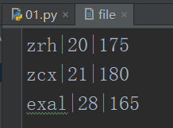
注意事项一：
1 with open("file",'r+',encoding='utf-8') as file_1: #打开文件时候不清空文件
2 file_1.readline() #读第一行，指针现在在第一行末尾
3 file_1.write("good") #在执行写操作的时候，是在文件末尾追加输出结果：
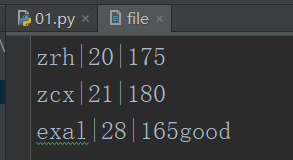
注意事项二：
当不执行读操作的时候，再写的话默认从开始的位置覆盖
with open("file",'r+',encoding='utf-8') as file_1: #打开文件时候不清空文件
file_1.write("good") #当不执行读操作的时候，再写的话默认从开始的位置覆盖输出结果：
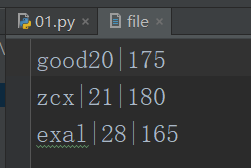
所以在以后的操作中，不要同时读写操作一个文件，因为会乱，所以不用“R+”，就单独的用 r、w、a
文件的功能：
read
1 obj = open('美女.txt',mode='r+',encoding='utf-8')
2 data = obj.read() # 读取所有文件内容
3 data = obj.read(2) # 在r模式中读取的2是2个字符；在rb模式中读取的2是2个字节
4 obj.write('字节或字符串')seek
1 obj = open('美女.txt',mode='r+',encoding='utf-8') #打开文件时注意该文件是不是用utf-8编码的
2 obj.seek(2) # 参数2永远是字节，用来指定指针的位置 utf-8一个中文3个字节tell等
1 obj.tell() # 读取当前指针的位置，读取到的是字节数
2 obj.writable() #是否可写，r模式下就不可写，可以用变量接收返回值
3 obj.readable() #是否可读，w模式下就不可读，可以用变量接收返回值flush将内存中内容刷到硬盘
1 count = open('name.txt',mode='r+',encoding='utf-8')
2 while True:
3 val = input(">>>")
4 count.write(val) #给文件里写内容
5 count.flush() #强行把内容刷到硬盘，不然文件在循环里永远关闭不了
6 count.close()readline
（readlines()表示读取整个文件，返回的是一个列表）
1 count = open('name.txt',mode='r+',encoding='utf-8')
2 date = count.readline()
3 print(date)
4 date = count.readline() #在读第二行的时候，第一行内容是zrh\n，\n也会被读出来，所以打印的时候中间会多一行间隙
5 print(date)
6 count.close()打印结果：
zrh
zrh1
zrh2
readline常用的一种方法：
count = open('name.txt',mode='r+',encoding='utf-8')
for line in count:
print(line) #即使文件有80个G，for循环的垃圾回收体制会即时节省内存truncate
obj.truncate() #截取文件内容，根据指针位置，只保留指针之前数据注意：写文件的时候一定记着关闭文件，这里有一种自动关闭的方法：
with open("name.txt",mode="r+",encoding="utf-8") as count: #as 后面是接收打开文件对象的变量名
#在缩进里写代码内容
#等待运行完代码后会自动跳出缩进，就自动关闭了总结：
|
file.close() |
|
关闭文件。关闭后文件不能再进行读写操作。 |
|
file.flush() |
|
刷新文件内部缓冲，直接把内部缓冲区的数据立刻写入文件, 而不是被动的等待输出缓冲区写入。 |
|
file.fileno() |
|
返回一个整型的文件描述符(file descriptor FD 整型), 可以用在如os模块的read方法等一些底层操作上。 |
|
file.isatty() |
|
如果文件连接到一个终端设备返回 True，否则返回 False。 |
|
file.read([size]) |
|
从文件读取指定的字节数，如果未给定或为负则读取所有。 |
|
file.readline([size]) |
|
读取整行，包括 "\n" 字符。 |
|
file.readlines([sizeint]) |
|
读取所有行并返回列表，若给定sizeint>0，返回总和大约为sizeint字节的行, 实际读取值可能比 sizeint 较大, 因为需要填充缓冲区。 |
|
file.seek(offset[, whence]) |
|
移动文件读取指针到指定位置 |
|
file.tell() |
|
返回文件指标当前位置。 |
|
file.truncate([size]) |
|
从文件的首行首字符开始截断，截断文件为 size 个字符，无 size 表示从当前位置截断；截断之后后面的所有字符被删除，其中 Widnows 系统下的换行代表2个字符大小。 |
|
file.write(str) |
|
将字符串写入文件，返回的是写入的字符长度。 |
|
file.writelines(sequence) |
|
向文件写入一个序列字符串列表，如果需要换行则要自己加入每行的换行符。 |
文件的删除和重命名：
import os
with open("file",'r+',encoding='utf-8') as file_1: #打开文件时候不清空文件
pass
os.remove('file') #删除file的文件
os.rename('file','file_new') #将文件名file修改为file_new文件内容的修改：
步骤：
1.先遍历文件
2.str.replace或者str.split
3.将修改后的所有文件重新写入一个新文件
4.删除原来文件
5.将新文件重命名为原来文件的名字
举例：
file文件的内容：
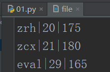
需求1：给每一项的第一个 | 前的字母加上 _good
1 import os #导入os模块
2 file_2 = open("file_new",'w',encoding='utf-8') #以写模式打开file_new文件，打开之前会清空原文件内容
3 with open("file",'r',encoding='utf-8') as file_1: #以读模式打开file文件
4 for line in file_1:
5 list_1 = line.split("|")
6 list_1[0] = list_1[0]+"_good"
7 content = '|'.join(list_1)
8 file_2.write(content) #每遍历一个内容，修改后就写到file_new里面
9 file_2.close()
10 os.remove('file') #删除原来的file文件
11 os.rename('file_new','file') #将file_new文件重命名为file输出结果：
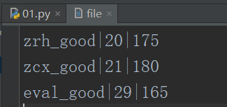
需求2：给zcx后面加上 _good ，其他保持不变
1 import os #导入os模块
2 file_2 = open("file_new",'w',encoding='utf-8') #以写模式打开file_new文件，打开之前会清空原文件内容
3 with open("file",'r',encoding='utf-8') as file_1: #以读模式打开file文件
4 for line in file_1:
5 list_1 = line.split("|")
6 if list_1[0] == 'zcx': #判断是不是zcx
7 list_1[0] = list_1[0]+"_good"
8 content = '|'.join(list_1)
9 file_2.write(content) #每遍历一个内容，修改后就写到file_new里面
10 file_2.close()
11 os.remove('file') #删除原来的file文件
12 os.rename('file_new','file') #将file_new文件重命名为file输出结果：
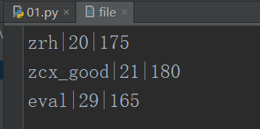